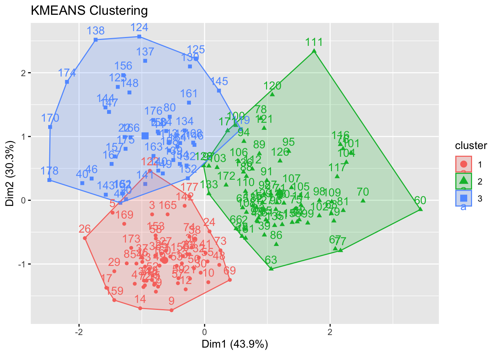

library(datasets)
library(ISLR)
arrest = USArrests
states = row.names(USArrests)
names(USArrests)[1] "Murder" "Assault" "UrbanPop" "Rape" PCA and Beyond
Unsupervised Methods
Data, mining, learning
In this article, I will do some PCA (Principal Component) and clustering analysis on U.S. crime data.
With PCA we try to find permutations of a data-set that identifies what relationships are responsible for causing the most uncorrelated variance. Specifically, this transformation is done for ‘dimensions’ of the data by rotating the original data (making it orthogonal and hence uncorrelated to itself) along a new axis in a way that minimizes the average (squared) distance between observations and the new direction so taken. Often, you can work with the first two dimensions that will permit this type of transformation to make comparisons about your data-set.
So, I first load in my data-set:
library(datasets)
library(ISLR)
arrest = USArrests
states = row.names(USArrests)
names(USArrests)[1] "Murder" "Assault" "UrbanPop" "Rape" I get the means
apply(USArrests, 2, mean) Murder Assault UrbanPop Rape
7.788 170.760 65.540 21.232 I also grab the variations
apply(USArrests, 2, var) Murder Assault UrbanPop Rape
18.97047 6945.16571 209.51878 87.72916 I then apply PCA with scaling
pr.out = prcomp(USArrests, scale = TRUE)
names(pr.out)[1] "sdev" "rotation" "center" "scale" "x" Then I center the data
pr.out$center Murder Assault UrbanPop Rape
7.788 170.760 65.540 21.232 I make a ‘variable loadings matrix’
pr.out$scale Murder Assault UrbanPop Rape
4.355510 83.337661 14.474763 9.366385 then rotate it
pr.out$rotation PC1 PC2 PC3 PC4
Murder -0.5358995 -0.4181809 0.3412327 0.64922780
Assault -0.5831836 -0.1879856 0.2681484 -0.74340748
UrbanPop -0.2781909 0.8728062 0.3780158 0.13387773
Rape -0.5434321 0.1673186 -0.8177779 0.08902432check dimension size
dim(pr.out$x)[1] 50 4Finally, outputting:
pr.out$rotation=-pr.out$rotation
pr.out$x=-pr.out$x
biplot(pr.out, scale=0)
compute the standard deviation
pr.out$sdev[1] 1.5748783 0.9948694 0.5971291 0.4164494calculate the variance by squaring and specifiy the proportion of variance explained
pr.var=pr.out$sdev^2
pve=pr.var/sum(pr.var)plotting:
plot(pve, xlab="Principla Component", ylab = "Proportion of Variance Explained", ylim=c(0,1),type = 'b')
to show the cumulative effect of explanatory power in regard to variance, I use:
plot(cumsum(pve), xlab="Principal Component", ylab="Cumulative Proportion of Variance Explained", ylim=c(0,1),type='b')
Finally, plotting out:
library(factoextra)Loading required package: ggplot2Welcome! Want to learn more? See two factoextra-related books at https://goo.gl/ve3WBafviz_pca_biplot(pr.out, font.family = "Georgia", col.var = "firebrick1")
Next, I move on to K-Means clustering.
The goal of K-Means is to find the amount of clusters of observations within the data the minimizes the sum of squares within those clusters. Of course, we can also specify the number of clusters as well. First, I load in my new data-set, perform other set-up steps and chart the difference between hard-drive size and ram capacity in each PC:
library(dplyr)
library(ggplot2)
library(RColorBrewer)
library(animation)
computers = read.csv("https://raw.githubusercontent.com/guru99-edu/R-Programming/master/computers.csv")
rescaled_comp <- computers[4:5] %>%
mutate(hd_scal = scale(hd),
ram_scal = scale(ram)) %>%
select(c(hd_scal, ram_scal))
ggplot(data = rescaled_comp, aes(x = hd_scal, y = ram_scal)) +
geom_point(pch=20, col = "blue") + theme_bw() +
labs(x = "Hard drive size (Scaled)", y ="RAM size (Scaled)" ) +
theme(text = element_text(family="Georgia")) 
Next, I produce the output of the k-means process via an animation with (producing the output as a sequence of frames):
set.seed(2345)
kmeans.ani(rescaled_comp[1:2], centers = 4, pch = 15:18, col = 1:4)Next, I try the k-means approach with some flower data via the ‘Iris’ data-set:
ggplot(iris, aes(Petal.Length, Petal.Width, color = Species)) + geom_point() +
theme_bw() +
scale_color_manual(values=c("firebrick1","forestgreen","darkblue"))
Here, we can see the result of grouping the real data by flower species. Now, setting up our algorithm:
set.seed(20)
irisCluster <- kmeans(iris[, 3:4], 3, nstart = 20)
irisClusterK-means clustering with 3 clusters of sizes 50, 48, 52
Cluster means:
Petal.Length Petal.Width
1 1.462000 0.246000
2 5.595833 2.037500
3 4.269231 1.342308
Clustering vector:
[1] 1 1 1 1 1 1 1 1 1 1 1 1 1 1 1 1 1 1 1 1 1 1 1 1 1 1 1 1 1 1 1 1 1 1 1 1 1
[38] 1 1 1 1 1 1 1 1 1 1 1 1 1 3 3 3 3 3 3 3 3 3 3 3 3 3 3 3 3 3 3 3 3 3 3 3 3
[75] 3 3 3 2 3 3 3 3 3 2 3 3 3 3 3 3 3 3 3 3 3 3 3 3 3 3 2 2 2 2 2 2 3 2 2 2 2
[112] 2 2 2 2 2 2 2 2 3 2 2 2 2 2 2 3 2 2 2 2 2 2 2 2 2 2 2 3 2 2 2 2 2 2 2 2 2
[149] 2 2
Within cluster sum of squares by cluster:
[1] 2.02200 16.29167 13.05769
(between_SS / total_SS = 94.3 %)
Available components:
[1] "cluster" "centers" "totss" "withinss" "tot.withinss"
[6] "betweenss" "size" "iter" "ifault" Checking the class:
class(irisCluster$cluster)[1] "integer"and comparing the successfullness of the k-means approach with a confusion matrix:
table(irisCluster$cluster, iris$Species)
setosa versicolor virginica
1 50 0 0
2 0 2 46
3 0 48 4Finally, outputting the graphical results of the k-means approach compared with the real data:
library(grid)
library(gridExtra)
irisCluster$cluster <- as.factor(irisCluster$cluster)
actual = ggplot(iris, aes(Petal.Length, Petal.Width, color = Species)) + geom_point() +
theme_bw() +
scale_color_manual(values=c("firebrick1","forestgreen","darkblue")) +
theme(legend.position="bottom") +
theme(text = element_text(family="Georgia"))
kmc = ggplot(iris, aes(Petal.Length, Petal.Width, color = irisCluster$cluster)) + geom_point() +
theme_bw() +
scale_color_manual(values=c("firebrick1", "darkblue", "forestgreen")) +
theme(legend.position="bottom") +
theme(text = element_text(family="Georgia"))
grid.arrange(arrangeGrob(actual, kmc, ncol=2, widths=c(1,1)), nrow=1)Finally, let’s try some wine…or at least an analysis of some wine data.
Setting up:
library(readr)
wine <- read_csv("https://raw.githubusercontent.com/datageneration/gentlemachinelearning/master/data/wine.csv")
wine_subset <- scale(wine[ , c(2:4)])
wine_cluster <- kmeans(wine_subset, centers = 3,
iter.max = 10,
nstart = 25)
wine_clusterK-means clustering with 3 clusters of sizes 48, 60, 70
Cluster means:
Alcohol Malic Ash
1 0.1470536 1.3907328 0.2534220
2 0.8914655 -0.4522073 0.5406223
3 -0.8649501 -0.5660390 -0.6371656
Clustering vector:
[1] 2 3 2 2 2 2 2 2 2 2 2 2 2 2 2 2 2 2 2 1 2 1 2 2 2 2 2 3 2 2 2 2 2 2 2 2 2
[38] 2 3 1 2 1 2 1 3 1 1 2 2 2 3 2 2 2 2 2 2 2 2 3 3 3 3 3 3 3 3 3 2 3 3 2 2 2
[75] 3 3 3 3 3 1 3 3 3 1 3 3 3 3 3 3 3 3 3 3 3 3 3 3 3 3 3 3 3 3 3 3 3 3 3 3 3
[112] 3 1 3 3 3 3 3 1 3 3 2 1 1 1 3 3 3 3 1 3 1 3 1 3 3 1 1 1 1 1 2 1 1 1 1 1 1
[149] 1 1 1 1 2 1 3 1 1 1 2 2 1 1 1 1 2 1 1 1 2 1 3 3 2 1 1 1 2 1
Within cluster sum of squares by cluster:
[1] 73.71460 67.98619 111.63512
(between_SS / total_SS = 52.3 %)
Available components:
[1] "cluster" "centers" "totss" "withinss" "tot.withinss"
[6] "betweenss" "size" "iter" "ifault" Plotting within-cluster sum of squares
wssplot <- function(data, nc=15, seed=1234){
wss <- (nrow(data)-1)*sum(apply(data,2,var))
for (i in 2:nc){
set.seed(seed)
wss[i] <- sum(kmeans(data, centers=i)$withinss)}
plot(1:nc, wss, type="b", xlab="Number of Clusters",
ylab="Within groups sum of squares")
}
wssplot(wine_subset, nc = 9)
Now, to plot by dimensions:
wine_cluster$cluster = as.factor(wine_cluster$cluster)
pairs(wine[2:4],
col = c("firebrick1", "darkblue", "forestgreen")[wine_cluster$cluster],
pch = c(15:17)[wine_cluster$cluster],
main = "K-Means Clusters: Wine data")
Inspect:
table(wine_cluster$cluster)
1 2 3
48 60 70 Graph impact of clusters #s:
library(factoextra)
fviz_nbclust(wine_subset, kmeans, method = "wss")
Fancifully:
wine.km <- eclust(wine_subset, "kmeans", nboot = 2)
Print output of doing k-means via ‘eclust’:
wine.kmK-means clustering with 3 clusters of sizes 60, 70, 48
Cluster means:
Alcohol Malic Ash
1 0.8914655 -0.4522073 0.5406223
2 -0.8649501 -0.5660390 -0.6371656
3 0.1470536 1.3907328 0.2534220
Clustering vector:
[1] 1 2 1 1 1 1 1 1 1 1 1 1 1 1 1 1 1 1 1 3 1 3 1 1 1 1 1 2 1 1 1 1 1 1 1 1 1
[38] 1 2 3 1 3 1 3 2 3 3 1 1 1 2 1 1 1 1 1 1 1 1 2 2 2 2 2 2 2 2 2 1 2 2 1 1 1
[75] 2 2 2 2 2 3 2 2 2 3 2 2 2 2 2 2 2 2 2 2 2 2 2 2 2 2 2 2 2 2 2 2 2 2 2 2 2
[112] 2 3 2 2 2 2 2 3 2 2 1 3 3 3 2 2 2 2 3 2 3 2 3 2 2 3 3 3 3 3 1 3 3 3 3 3 3
[149] 3 3 3 3 1 3 2 3 3 3 1 1 3 3 3 3 1 3 3 3 1 3 2 2 1 3 3 3 1 3
Within cluster sum of squares by cluster:
[1] 67.98619 111.63512 73.71460
(between_SS / total_SS = 52.3 %)
Available components:
[1] "cluster" "centers" "totss" "withinss" "tot.withinss"
[6] "betweenss" "size" "iter" "ifault" "clust_plot"
[11] "silinfo" "nbclust" "data" "gap_stat" Find the optimal # of clusters using gap stats:
wine.km$nbclust[1] 3Graph the optimality range:
fviz_nbclust(wine_subset, kmeans, method = "gap_stat")Make a silhouette plot
fviz_silhouette(wine.km) cluster size ave.sil.width
1 1 60 0.44
2 2 70 0.33
3 3 48 0.30Finally:
fviz_cluster(wine_cluster, data = wine_subset, ellipse.type = "norm") +
theme_bw() +
theme(text = element_text(family="Georgia")) As a little bonus, we will do some hierarchical clustering with the crime data we started with.
The purpose of such clustering is to find the attribute of observations that have the smallest ‘eludican distance’ from one another, measured along some dimension of the data. Then build up from that with the next closest pairing, etc (although there are other possible building methods one could use). We first run the algorithm after scaling all variables and computing their ‘euclidean distance’ from each other along various dimensions, and then generate a dendrogram of the output:
library(cluster)
arrest.hc <- USArrests %>%
scale() %>%
dist(method = "euclidean") %>%
hclust(method = "ward.D2")
fviz_dend(arrest.hc, k = 4, # Four groups
cex = 0.5,
k_colors = c("firebrick1","forestgreen","blue", "purple"),
color_labels_by_k = TRUE, # color labels by groups
rect = TRUE, # Add rectangle (cluster) around groups,
main = "Cluster Dendrogram: USA Arrest data"
) + theme(text = element_text(family="Georgia")) 
We can see certain states are found the be more ‘natural’ co-habitors via this process than others.